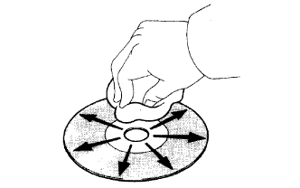

HỆ THỐNG NGHE NHÌN > MÔ TẢ HỆ THỐNG |
| ĐẦU ĐĨA CD |
Đầu CD dùng một đầu đọc tia laze để đọc các tín hiệu kỳ thuật số đã được ghi trong các đĩa CD và tái tạo lại tín hiệu tương tự của âm nhạc v.v.. Đầu CD chỉ phát được đĩa CD có đường kính 12 cm.
| BẢO DƯỠNG |
|  |
Lau sạch đĩa CD:
Nếu đĩa CD bị bẩn, hãy lau đĩa bằng giẻ sạch theo hướng kính.